Diode Clippers
In this chapter
- 3.1 Need for wave-shaping circuits
- 3.2 Series clippers
- 3.3 Shunt clippers
- 3.4 Positive and negative clippers
- 3.5 Biased clippers
- 3.6 Two-level clippers
- 3.7 Symmetrical and asymmetrical clipping
- 3.8 Clippers using practical diodes
- 3.9 Transfer characteristics
- 3.10 Input–output waveform analysis
- 3.11 GATE shortcut methods
- 3.12 Solved GATE problems
- 3.13 Practice problems
3.1 Need for wave-shaping circuits
A clipper (limiter) removes the part of a waveform that lies above or below a chosen level without distorting the rest. It is used to protect inputs from over-voltage, to square up sine waves, in FM noise limiters and in waveform generators. Two topologies exist:
- Series clipper: diode in the signal path, load to ground.
- Shunt clipper: resistor in the signal path, diode across the output.
Throughout this chapter the input is \(v_i=10\sin\omega t\) V, diodes are silicon with \(V_{on}=0.7\) V, and the load is light unless stated. To avoid the ambiguity in the words “positive” and “negative” clipper, each circuit is described by what happens to the waveform.
3.2 Series clippers
Diode forward in the path (Figure 3.1): the diode conducts when \(v_i>0.7\) V. Then \(v_o=v_i-0.7\); otherwise the diode is OFF and \(v_o=0\). The negative half-cycle is removed.
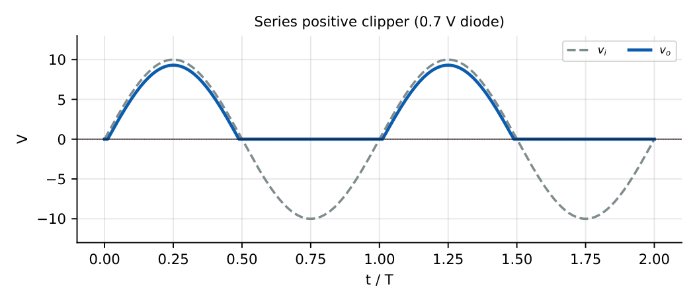
Diode reversed: conducts for \(v_i<-0.7\) V, so \(v_o=v_i+0.7\) there, and zero otherwise. The positive half is removed.
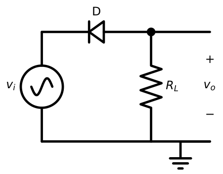
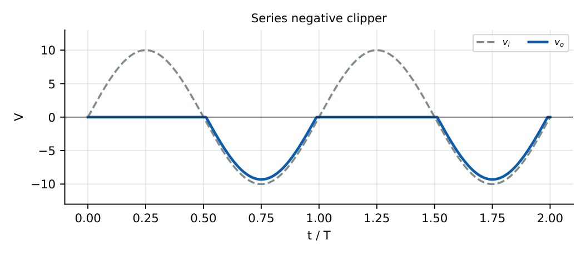
\(v_i=10\sin\omega t\), forward series diode, \(R_L=1\) k\(\Omega\). \(V_{o,peak}=10-0.7=9.3\) V. The diode conducts for \(\sin\omega t>0.07\), i.e. from \(\omega t=4.0^\circ\) to \(176^\circ\). Exact average output \(=\dfrac1{2\pi}\int(10\sin\theta-0.7)\,d\theta\approx2.84\) V over the conduction interval. The quick estimate \(9.3/\pi=2.96\) V overestimates slightly because the conduction angle is a little less than \(180^\circ\).
3.3 Shunt clippers
The resistor \(R\) carries the difference. When the diode is OFF it draws no current, \(v_o=v_i\) (no load). When it conducts, \(v_o\) is pinned at its ON voltage.
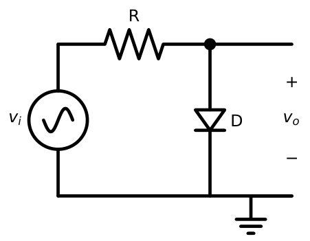
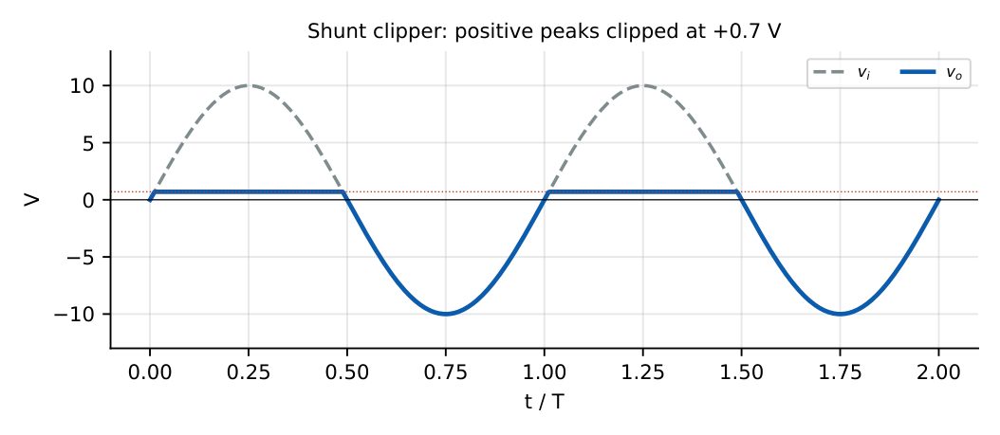
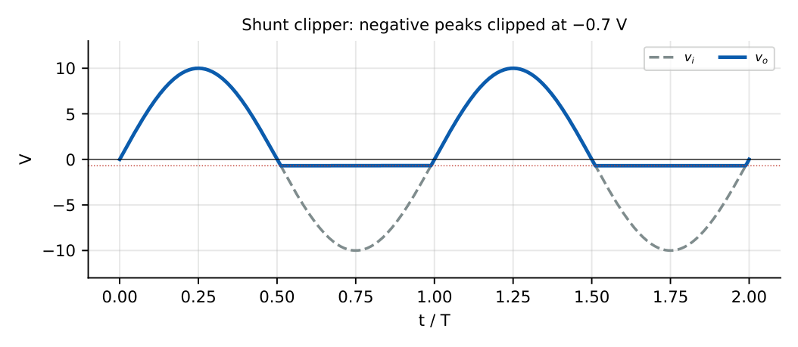
In a shunt clipper the un-clipped part of the waveform is exactly \(v_i\) only if the load draws no current. With a load \(R_L\) the output is \(v_iR_L/(R+R_L)\) when the diode is OFF, and the clipping level is unchanged.
Shunt clipper (diode to ground), \(R=1\) k\(\Omega\), \(R_L=3\) k\(\Omega\) in parallel with the diode (across the output). Diode OFF: \(v_o=0.75v_i\). It turns ON when \(0.75v_i=0.7\), i.e. \(v_i=0.93\) V. So for \(v_i=+10\) V \(v_o=0.7\) V; for \(v_i=-10\) V, \(v_o=-7.5\) V. The waveform is shrunk by \(0.75\) in the unclipped half.
3.4 Positive and negative clippers
| Circuit | Diode direction | Removed part | Clip level |
|---|---|---|---|
| Series, forward | anode at input | negative half | \(v_i<+0.7\) |
| Series, reversed | cathode at input | positive half | \(v_i>-0.7\) |
| Shunt, anode at output | to ground | positive peaks | \(+0.7\) V |
| Shunt, cathode at output | from ground | negative peaks | \(-0.7\) V |
The textbook names positive clipper and negative clipper usually refer to the half-cycle that is clipped; read the diagram if in doubt, which GATE questions always supply.
3.5 Biased clippers
Adding a DC battery \(V_R\) moves the clipping level.
Shunt, positive-peak clipping. The diode conducts only when \(v_o>V_R+0.7\). Above this level the output is held at \(V_R+0.7\).
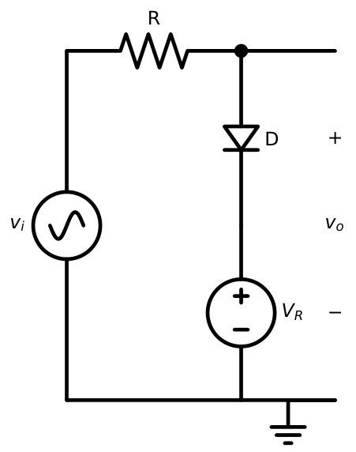
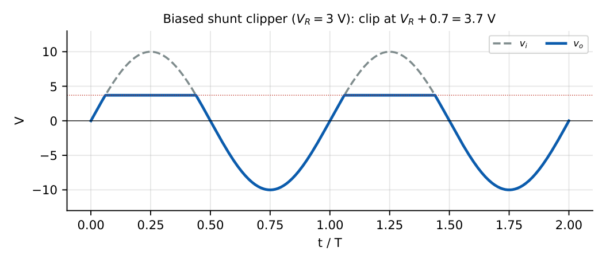
Shunt, negative-peak clipping. With the diode reversed and the battery reversed, clipping occurs for \(v_o<-(V_R+0.7)\).
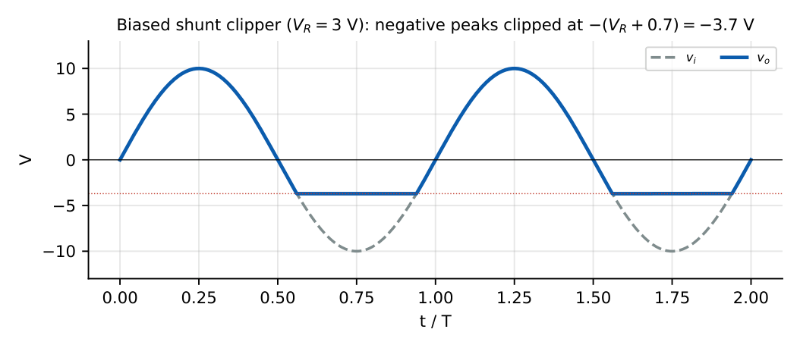
Biased series clipper. Placing the battery in series with the diode delays turn-on: output appears only when \(v_i>V_R+0.7\) and then \(v_o=v_i-V_R-0.7\).
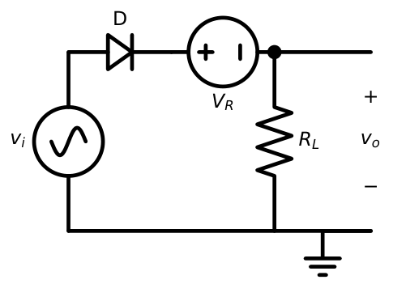
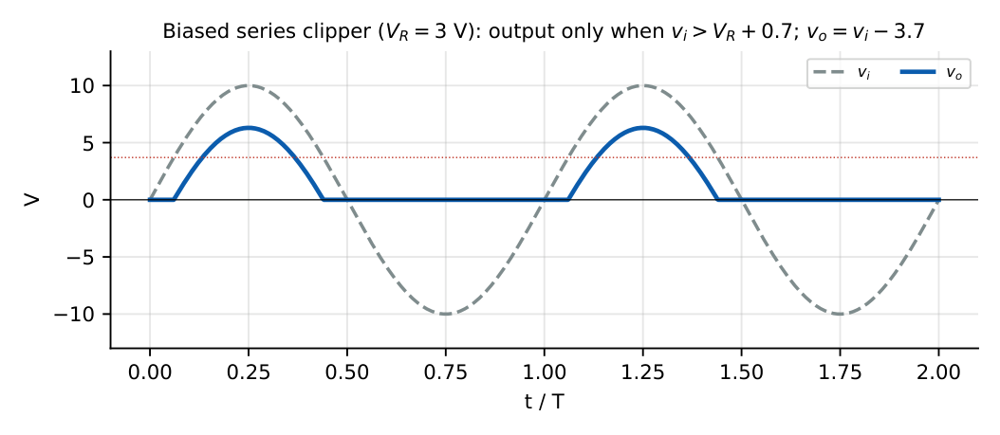
Biased shunt clipper, \(V_R=3\) V, \(v_i=10\sin\omega t\). Clip level \(=3.7\) V. The diode starts conducting at \(\omega t=\sin^{-1}(0.37)=21.7^\circ\) and stops at \(158.3^\circ\). Conduction angle \(=136.6^\circ\); output peak \(=3.7\) V; negative peak \(=-10\) V (unchanged).
3.6 Two-level clippers
Two shunt branches limit both peaks. The upper diode \(D_1\) (battery \(V_1\)) sets the top level \(V_1+0.7\); the lower diode \(D_2\) (battery \(V_2\)) sets the bottom level \(-(V_2+0.7)\).
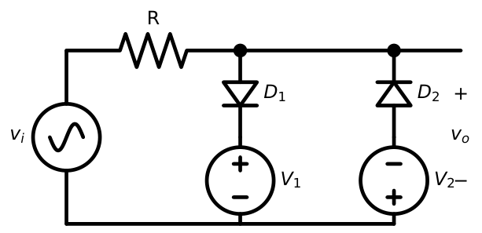
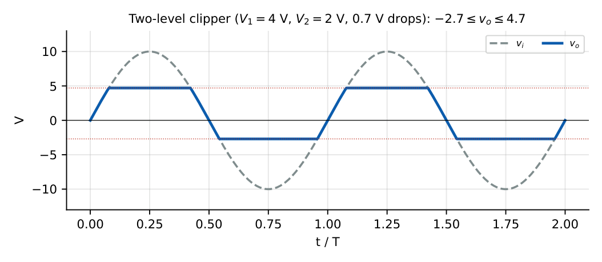
\(v_i=10\sin\omega t\), \(V_1=4\) V, \(V_2=2\) V. Output limits \(+4.7\) V and \(-2.7\) V. Between these the output follows \(v_i\). The output follows the input only while \(-2.7<v_i<4.7\). On the rising pass this lasts from \(-\sin^{-1}(0.27)=-15.7^\circ\) to \(\sin^{-1}(0.47)=28.0^\circ\), i.e. \(43.7^\circ\); the falling pass is identical. Un-clipped fraction \(=87.4^\circ/360^\circ\approx24\%\) of the cycle.
3.7 Symmetrical and asymmetrical clipping
Symmetrical: equal positive and negative limits. The simplest circuit is two anti-parallel diodes across the output (Figure 3.9); limits are \(\pm0.7\) V and the waveform becomes nearly trapezoidal. With \(V_1=V_2\) in the two-level circuit one obtains \(\pm(V_1+0.7)\).
Asymmetrical: unequal limits, e.g. \(V_1\ne V_2\) above, or one-sided clipping (a single diode).
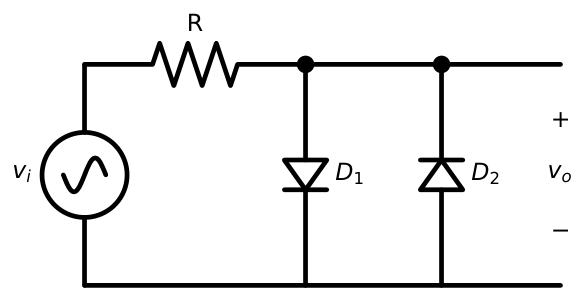
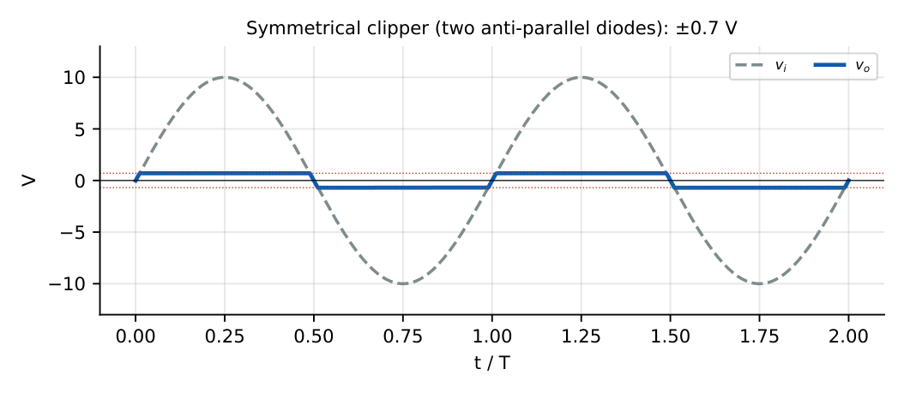
3.8 Clippers using practical diodes
Real diodes are not ideal: the clip level is \(V_{on}\) plus a small \(I\,r_d\) term, and the transition between “following” and “clipped” is rounded (a soft knee) over a few tens of mV. A Zener diode makes a natural two-level clipper: it clips at \(+V_Z\) (Zener breakdown) in one direction and at \(-0.7\) V (forward) in the other.
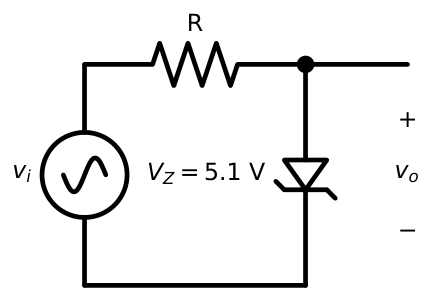
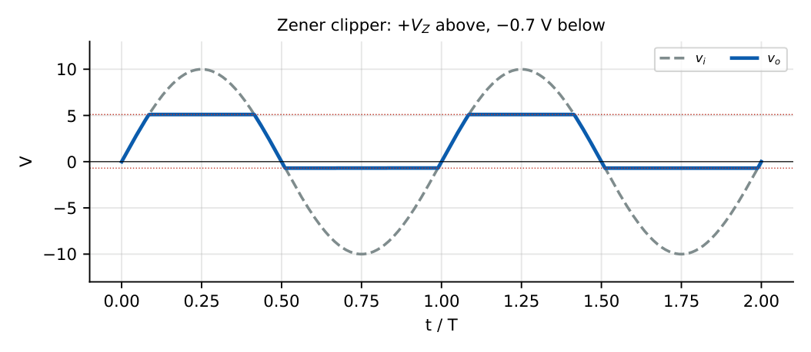
\(V_Z=5.1\) V, \(v_i=12\sin\omega t\). Positive peak clipped at \(5.1\) V (Zener reverse), negative peak at \(-0.7\) V (Zener forward). Two Zeners back-to-back with \(V_{Z1}=V_{Z2}=5.1\) V give \(+5.8\) V and \(-5.8\) V (one in breakdown, one forward-drop \(0.7\) V).
3.9 Transfer characteristics
The transfer characteristic plots \(v_o\) against \(v_i\). For an ideal clipper it is a piecewise-linear curve: slope \(1\) where the output follows and slope \(0\) where it is clipped. The break points are the clip levels.
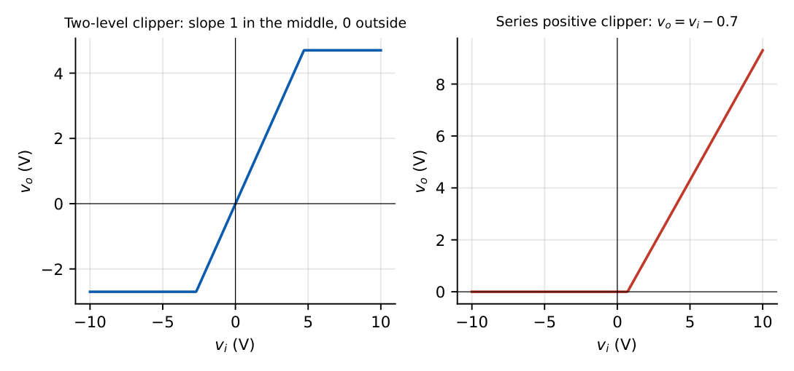
To draw any clipper’s transfer curve: (i) find the input at which each diode changes state, (ii) evaluate \(v_o\) on each side of every break point, (iii) join with straight lines. Slope is \(1\) (or \(R_L/(R+R_L)\) with a load) in the un-clipped segment and \(0\) in the clipped one.
3.10 Input–output waveform analysis
1. Identify the two extreme states: input at its most positive and at its most negative peak; decide each diode’s state.
2. For each state write \(v_o=f(v_i)\).
3. Find the switching instants \(v_i=V_{threshold}\) and hence the angles \(\theta=\sin^{-1}(V_{th}/V_m)\).
4. Sketch and mark the clipped levels and the peaks.
When \(R_L\) is present, the divider changes the unclipped amplitude but not the clipped level. A Schottky diode (\(0.3\) V) or an ideal diode (\(0\) V) changes only the clip level.
3.11 GATE shortcut methods
(1) Shunt clipper: the clip level is the battery voltage \(\pm0.7\). (2) Series clipper: the output exists only when input exceeds the battery voltage \(\pm0.7\), with the same slope. (3) A diode conducts when it is forward biased in the circuit: compare anode and cathode voltages. (4) If a question asks for the average value of the output, integrate the un-clipped segment.
3.12 Solved GATE problems
For the two-level clipper above with \(V_1=4\) V and \(V_2=2\) V, \(v_i=10\sin\omega t\). Peak-to-peak output? \(4.7-(-2.7)=7.4\) V.
Shunt clipper (anode at output), \(R=1\) k\(\Omega\), \(V_R=2\) V in series with the diode, input a \(\pm8\) V square wave. Output? While \(v_i=+8\) V: diode ON, \(v_o=2.7\) V. While \(v_i=-8\) V: diode OFF, \(v_o=-8\) V.
Ideal-diode series clipper, \(v_i=5\sin\omega t\), battery \(V_R=2\) V in the biased-series configuration. Output nonzero when \(v_i>2\) V; peak output \(3\) V; conduction angle \(180^\circ-2\sin^{-1}(0.4)=132.8^\circ\).
Q1. A sine wave \(10\sin\omega t\) drives a series clipper with one ideal diode and \(R_L=1\) k\(\Omega\). The average output voltage (V) is nearest to (A) 2.96 (B) 3.18 (C) 6.37 (D) 0.
Q2. In the biased shunt clipper with \(V_R=3\) V and ideal diodes, the maximum output for \(v_i=8\sin\omega t\) is V.
Q3. For the anti-parallel diode limiter with \(R=1\) k\(\Omega\), a triangular input of \(\pm5\) V is applied. The output peak-to-peak (V) is .
Q4. Which circuit produces a nearly square wave from a large sine input? (A) HW rectifier (B) two-level clipper with equal small levels (C) clamper (D) series clipper.
Q5. For the Zener clipper with \(V_Z=5.1\) V, input \(\pm10\) V sine, the peak-to-peak output is V.
Answers: Q1: (B) \(V_m/\pi=3.18\) V. Q2: \(3\) V. Q3: \(\pm0.7\) so \(1.4\) V. Q4: (B). Q5: \(5.1-(-0.7)=5.8\) V.
3.13 Practice problems
- Sketch the output of a series clipper with a reversed diode and \(V_R=2\) V for \(v_i=6\sin\omega t\). [\(v_o=v_i+2.7\) for \(v_i<-2.7\), else \(0\); minimum \(-3.3\) V]
- Shunt clipper: diode conducts to a \(-1\) V battery (so clips at \(-1.7\) V for negative peaks). If \(v_i=\pm4\) V square, give \(v_o\). [\(+4\) V and \(-1.7\) V]
- Design a two-level clipper for \(\pm6\) V output limits with Si diodes. [\(V_1=V_2=5.3\) V]
- A \(R=470\ \Omega\) shunt clipper limits at \(0.7\) V. If \(v_i\) has \(+5\) V peaks, peak diode current? [\((5-0.7)/470=9.15\) mA]
- State one drawback of a Zener clipper for high-frequency signals. [Zener junction capacitance and slow response]